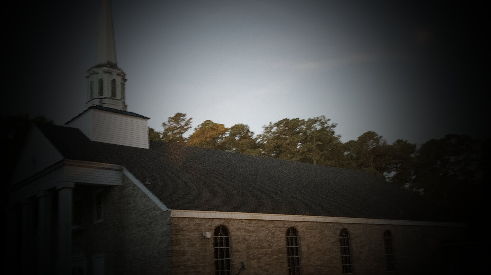
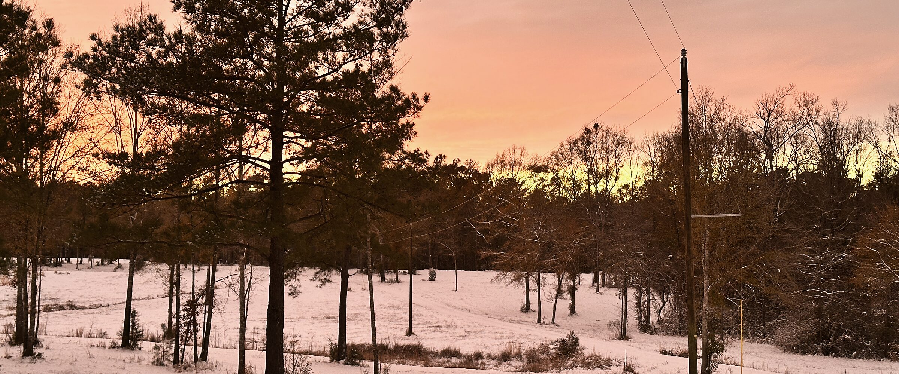
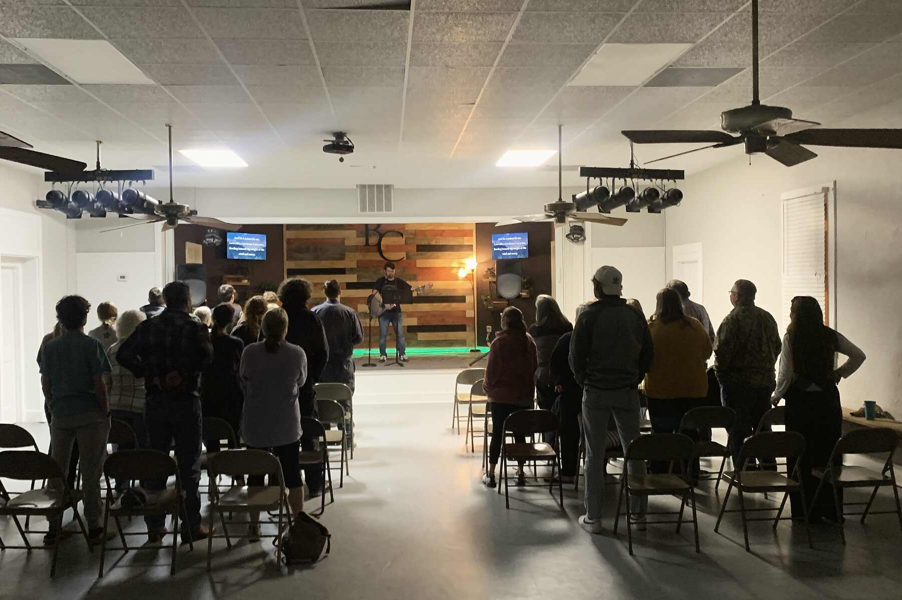

Sunday School
9:00a · Fellowship Building

A country church on Highway 63 that loves the Word, loves its people, and would love to know you. However you found us — come as you are.
 1706 Highway 63 · Clinton, LA 70722
1706 Highway 63 · Clinton, LA 70722

Bluff Creek is a traditional Southern Baptist church at the corner of Highways 959 and 63. On a normal Sunday you'll hear theologically rich hymns, a word for the kids (with treats), and thirty or forty minutes of preaching straight from the text — and then we hang out until somebody turns the lights off.
We're rooted in the Word, and we take the Great Commission personally: across our campus, across the street, across the country, and across the world.
 1706 · LA 63
1706 · LA 63
9:00a · Fellowship Building
10:15a · Sanctuary
5:30p · Fellowship Building
6:00p · Sanctuary

Go therefore and make disciples of all nations.Matthew 28:19
Birth through 5th grade — Sunday School at 9:00, a nursery for the littlest ones, VBS, the fall festival, and a safe, loving place every single week.
Kidz @ the Creek →6th–12th grade. Sunday mornings at 9:00, Sunday nights at 5:30, and MDWK every Wednesday at 6:00 — 6 on the 63. Camp, DNOW, and the fall retreat.
Youth @ the Creek →Sunday School classes for every age, a women's Monday-night study, Yoga @ the Creek, WMU, and a Wednesday prayer meeting that's the heartbeat of the week.
Adults @ the Creek →Suit or Wranglers, overalls off the tractor or camo off the stand — you'll fit right in. Bring your kids into the service or use the nursery; either way, nobody's going to give you a look we haven't earned ourselves.
If you fill out a contact card, I'll reach out during the week. I'd rather sit across a table from you with a cup of coffee than talk at you from a stage, and our family would love to share a meal with yours.
— Cole Permenter, Pastor
Plan your first Sunday

Where do I park? What do I do with my kids? Do I need to dress up? We wrote it all down so nothing about your first visit feels like a guess.
Plan a visitFrom the LOT Project in North Baton Rouge to partners in India and Northern Italy — our mission runs across campus, across the street, across the country, and across the world.
See where we serve →Give online in about a minute, in person on Sunday, or by mail. Every gift is recorded by the church treasurer for your year-end statement.
Give →Our app: this week's schedule, prayer requests, giving, and a way to connect. Scan the card in the pew or tap here, then add it to your home screen.
Get the app →